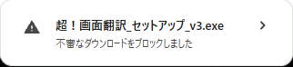
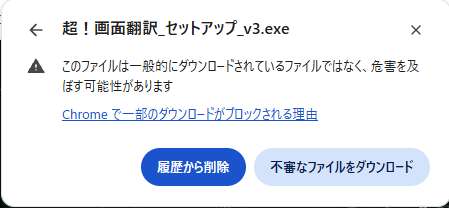
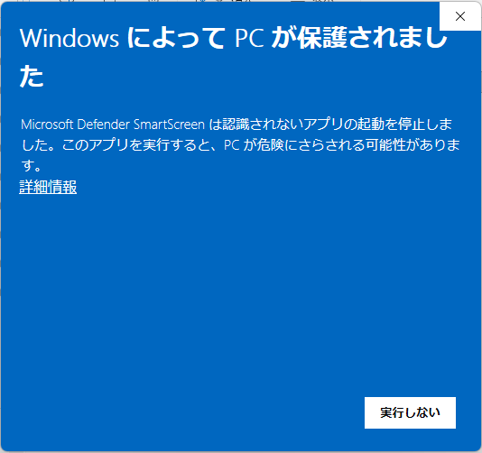
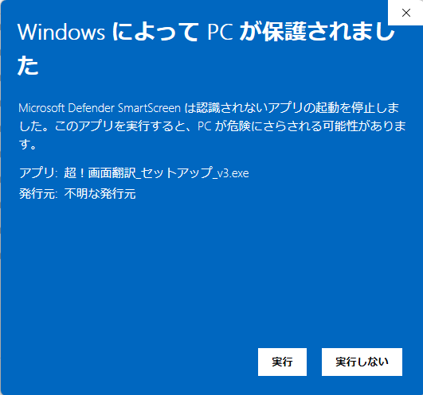

超！画面翻訳をホームページからダウンロードして入れるとき、ブラウザーと Windows の警告が 1 回ずつ出ることがあります。次の手順で進めると、インストールできます。
超！画面翻訳_セットアップ_v3.exe のためのものです。ほかのサイトのファイルや、名前の違うファイルでは、同じ操作をしないでください。ダウンロードすると、画面の右上に「不審なダウンロードをブロックしました」と出ます。この時点では、まだ保存されていません。
① この表示を押します。消えてしまったときは、Chrome の右上のダウンロードのアイコン（↓）を押します。

② 「不審なファイルをダウンロード」を押します。これで保存されます。

③ ダウンロードしたファイルを開きます。Chrome のダウンロードの一覧から開くか、「ダウンロード」フォルダーの 超！画面翻訳_セットアップ_v3.exe をダブルクリックします。
青い画面に「Windows によって PC が保護されました」と出たら、④「詳細情報」を押します。

⑤ アプリの名前が 超！画面翻訳_セットアップ_v3.exe であることを確かめて、「実行」を押します。

超！画面翻訳のセットアップの窓が開きます。「インストール」を押すと入ります。
必須ではありません。「ダウンロード」フォルダーで PowerShell を開き、次の命令を実行します。
Get-FileHash .\超！画面翻訳_セットアップ_v3.exe
出てきた Hash が次の値と同じなら、公開しているものと同じファイルです（大文字と小文字の違いは同じとみなします）。
a9c702da22b49d5f683f09b94d678f8679957ee051c7303ed904502e9fe7b123
この値は v3 のものです。
使い方は超！画面翻訳のマニュアルを見てください。